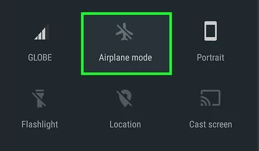

Fridge Grow Hilfe
Ich kann das WLAN meines Controllers nicht finden!
Probiere bitte folgende Schritte:
- Stell sicher, dass dein Controller vollständig gebootet hat.
Die LEDs sollten alle durchgehend gelb oder grün leuchten. Wenn die LEDs im Kreis laufen ist der Controller gerade beschäftigt. Bitte beachte, dass vor allem nach einem Update, der Bootvorgang bis zu 10 Minuten dauern kann.
- Probier deinen Controller neu zu starten.
Stecke dazu die USB Stromversorgung für ca 10sek aus und anschließend wieder ein. Warte, wie oben beschrieben, bis dein Controller gebootet hat.
- Probier deinen Controller auf Werkseinstellungen zurückzusetzen.
Halte, nachdem dein Controller gebootet ist, den Button in der Gehäuseoberseite, bis alle LEDs von blau auf gelb gewechselt haben. Warte danach bis dein Controller neu gebootet hat.
Ich bin mit dem WLAN verbunden, die App findet aber meinen Controller nicht!
Beim Verbinden mit dem WLAN zeigen viele Smartphones per Popup die Warnung “Kein Internet über dieses Netzwerk”

Diese Meldung muss unbedingt bestätigt werden! Wird sie das nicht, ist das Smartphone nicht vollständig mit dem
WLAN verbunden und die App kann nicht arbeiten.
Manchmal kann es etwas dauern bis diese Meldung kommt, deswegen warte bitte kurz auf der Seite mit den
WLAN Einstellungen bis du zurück zur App wechselst.
Sollte dies nicht zum gewünschten Erfolg führen, kannst du noch Probieren den Flugmodus deines Smartphones zu aktivieren.

Sollte dein Controller noch immer nicht gefunden werden, probier dich über den Punkt “Erweitert” direkt auf die Addresse 10.20.30.1 zu verbinden.